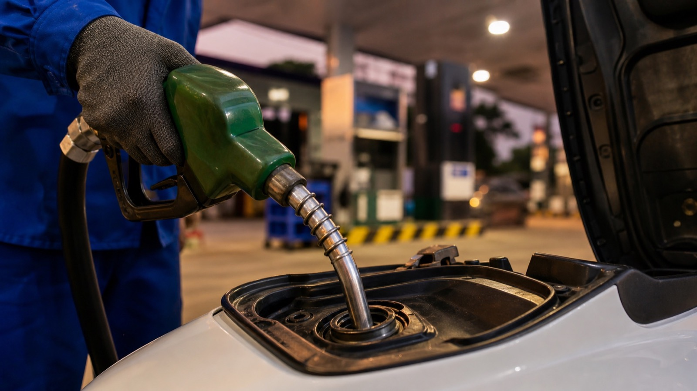

Первая заправка во Вьетнаме обычно проще, чем кажется: подъехал, сказал вид топлива и сумму или «полный бак», оплатил. Самое важное — не угадывать топливо по цвету колонки и не лить что попало в незнакомый байк.
На вьетнамских заправках чаще всего увидишь бензин RON 95 (его часто называют A95) и E5 RON 92. Это не «лучший» и «плохой» бензин, а разные виды топлива. Для конкретного байка ориентир — рекомендация производителя или наклейка/инструкция к модели. Если ты только купил б/у 50cc и не уверен, что лили раньше, не стесняйся уточнить у продавца или мастера до первой заправки.
Не надо превращать это в религию: нормальный байк любит своевременное обслуживание, чистое масло и адекватную езду не меньше, чем правильную колонку. Но привычка спрашивать вид топлива — хорошая защита от случайной ошибки.
На крупных заправках обычно достаточно показать жестом на бак и назвать топливо. Полезные фразы:
Цена топлива меняется, поэтому не привязывайся к старым цифрам из статей и чатов: смотри табло на конкретной заправке и попроси чек, если он нужен.
Не курить у колонки, не заводить байк во время заправки и не доливать «до самой горловины» через силу. Если байк после покупки ведёт себя странно — плохо заводится, глохнет, течёт или пахнет бензином — это не повод менять тип топлива наугад. Сначала нужна диагностика.
Перед продажей мы проверяем базовую технику и объясняем покупателю, какой байк он получает. А если выбираешь подержанный 50cc самостоятельно, сначала посмотри наш материал о проверке реального состояния и пробега и статью о том, как подтвердить настоящий объём 50cc по документам.